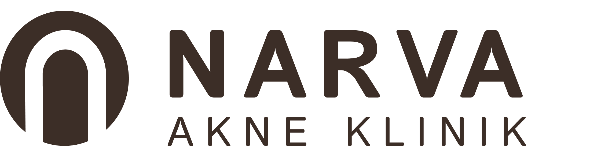

The Narva akne klinik focuses on providing specialized treatment for people with severe acne.


The website aims to portray a positive outlook on the diagnosis. It offers easy navigation and clear information, with minimal steps to facilitate initial contact, which is its primary objective.

Color palette
#3C2E27
#DC6A5D
#A4E1F4
#DFF5FB
#FFFFFF
Typography
Passion one regular
Istok web bold
Inter Bold
Istok web regular
Inter Light
The concept behind the visual identity was to establish a bright, simple, and professional appearance, incorporating fresh and vibrant colors. The use of light blue tones and fluid shapes aims to seamlessly blend medical and facial treatments. Additionally, the recurring red sections serve as a visual thread throughout the webpage, directing the visitor's attention to key areas.
The logo's creation was to evoke simplicity and professionalism. The font chosen is light and simple to convey hope and freshness. Symbolizing the initial letter "N," the logo is crafted in the form of a vault, representing strength and seriousness.